세 스킬 묶음, 무엇을 비교하나요
맷 포콕의 skills, 애디 오스마니의 agent-skills, 로렌 탄의 피스택(pstack)은 모두 AI(Artificial Intelligence) 코딩 에이전트에게 현업 개발자의 작업 습관을 가르치는 스킬 묶음이에요. 설명만 읽으면 셋 다 설계하고, 테스트하고, 검토한다고 해서 차이가 잘 안 보여요.
영상은 먼저 세 사람이 누구인지 보여 줘요. 이름 아래 작은 타임라인이 경력이에요. 맷 포콕은 Vercel·Stately 개발자를 거쳐 지금은 TypeScript 교육자(Total TypeScript, AI Hero)예요. 애디 오스마니는 Google에서 14년 넘게 일하다 지금은 Anthropic에 있어요. 로렌 탄은 Meta의 React 팀을 거쳐 Cursor 엔지니어로 일해요.
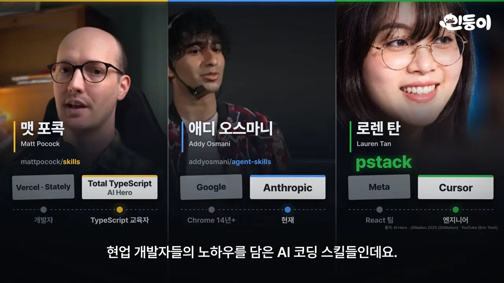
비교 틀은 단순해요. 요구사항, 구현, 검증 세 줄을 세우고, 각 칸에서 세 스킬 묶음이 어떤 스킬로 어떻게 접근하는지 채워 가요. 어떤 기능이 필요한지, 어떤 작업 방식이 나에게 맞는지 고르는 게 목표예요.
영상 내내 같은 예시를 써요. 친구들과 술자리 비용을 나누는 정산 앱이에요. 이 예시는 영상이 비교를 위해 만든 장면이고, 각 스킬 저장소에 들어 있는 예제는 아니에요.
무엇을 만들지 정할 때
맷 포콕 — 질문으로 빠진 조건을 채워요
맷 포콕은 내가 생각한 것과 AI가 이해한 것 사이의 간극을 줄이는 데 공을 들였어요. 아래 화면 왼쪽은 128,000원짜리 엔빵이고, 오른쪽 토글에서 '똑같이'와 '마신 사람만' 중 하나를 골라야 해요. 사람은 당연히 마신 사람끼리 나눈다고 생각해도, AI는 그 조건을 모를 수 있어요.
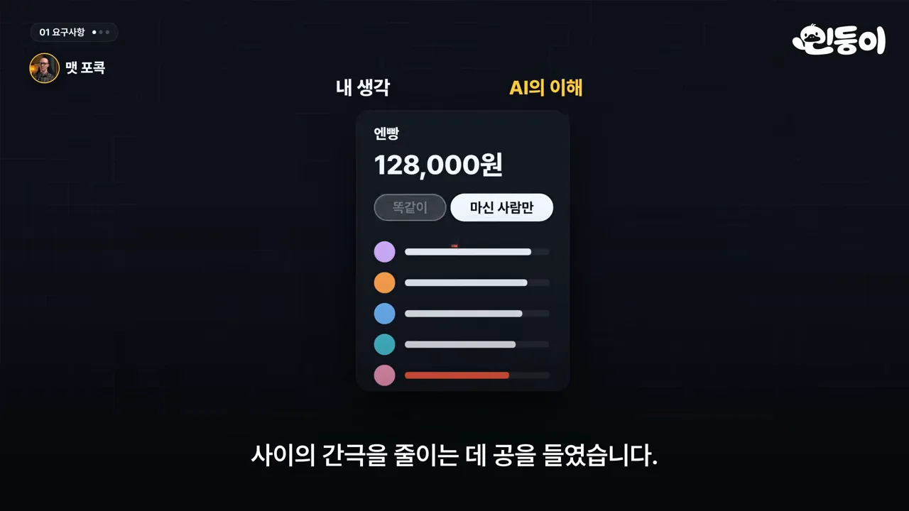
grill-me는 이런 빠진 조건을 질문으로 찾아내는 스킬이에요. 정산 앱을 만들어 달라고 하면 술값도 똑같이 나눌지, 마신 사람끼리만 나눌지부터 물어요. 화면에 띄운 grill-me의 SKILL.md에서 파란색으로 강조한 줄은 'For each question, provide your recommended answer'예요. 질문마다 추천 답을 함께 내서 사람이 판단하기 쉽게 해 줘요.
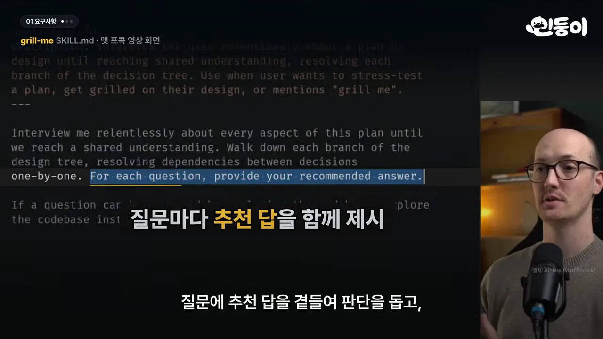
grill-with-docs는 같은 질문 방식에 기록을 더해요. 화면 왼쪽은 기존 코드 src/split.ts예요. drinks와 drinkers를 거르는 두 줄에 체크가 붙어 있어요. 오른쪽 위 용어집 GLOSSARY.md에는 '술값 = 맥주·소주 항목의 합', '마신 사람 = 술값을 나눠 내는 사람'처럼 정한 용어가 들어가요. 오른쪽 아래 docs/adr/0001-술값-분담.md에는 '술값은 마신 사람끼리만 나눈다'는 결정이 남아요.
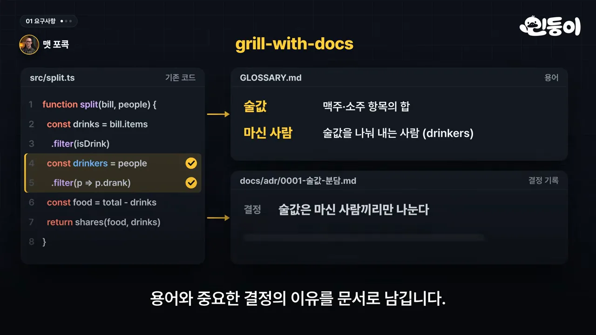
애디 오스마니 — 요구사항이 절차의 첫 단계예요
애디 오스마니도 요구사항을 정리해요. 다만 따로 꺼내 쓰는 도구가 아니라, 구현과 검증까지 이어지는 개발 절차의 첫 단계로 묶어 뒀어요. agent-skills README의 그림을 보면 DEFINE부터 SHIP까지 여섯 칸이 화살표로 이어지고, 칸마다 /spec, /plan, /build, /test, /review, /ship 명령이 붙어 있어요.
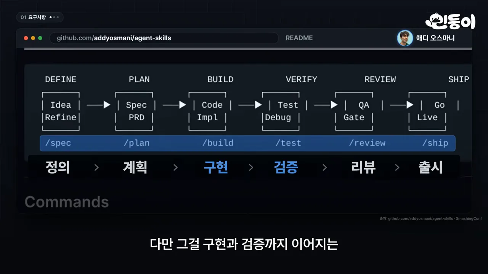
/spec은 SPEC.md에 다섯 가지를 적게 해요. 화면 오른쪽 카드 순서대로 목표, 구조, 코드 스타일, 테스트 기준, 경계예요. 맨 아래 경계는 다시 '항상 할 것', '먼저 물을 것', '하지 말 것' 세 칸으로 나뉘어요. 왼쪽 원문을 보면 커밋 전 테스트는 항상 할 것, 데이터베이스 스키마 변경은 먼저 물을 것, 비밀값 커밋은 하지 말 것에 들어가요. 다음 단계(/plan)에서는 이 문서를 작은 작업으로 나눠요.
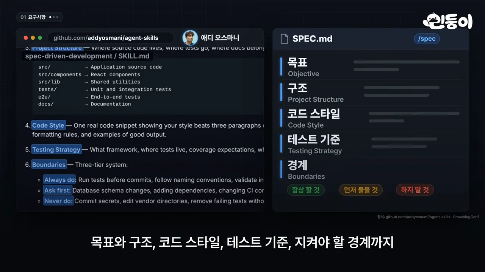
정리하면 맷 포콕의 질문 스킬은 필요할 때 꺼내 쓰는 도구이고, 애디는 요구사항 정리를 전체 흐름의 출발점에 둔 셈이에요.
피스택 — 기존 코드에서 이유를 찾아요
피스택은 따로 계획 스킬을 두기보다 실제 코드를 조사하고 검증하는 데 무게를 둬요. /how는 지금 어떻게 작동하는지, /why는 왜 그렇게 만들어졌는지를 찾아요. 아래 화면은 /how의 SKILL.md 첫 줄 'how does X work?'를 띄우고, settle.ts에서 split() → requestTransfer() → notify()로 이어지는 호출 흐름을 따라가요.
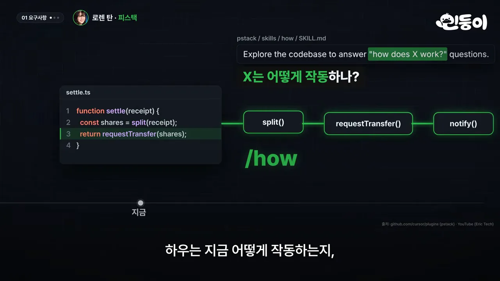
영상이 드는 예는 송금 요청을 하루 한 번으로 제한한 코드예요. 화면의 transfer.ts 첫 줄이 DAILY_REQUEST_LIMIT = 1이고, 이미 보냈으면 '오늘은 이미 요청했어요'를 돌려줘요. 이상해 보여도 바로 바꾸지 않아요. /why로 기록에서 이유를 찾고, 확인된 사실과 추측을 나눠요.
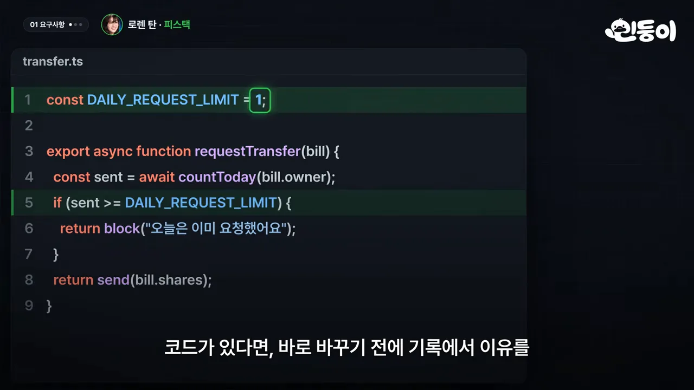
두 방식은 대립하지 않아요. 아래 PR(Pull Request) 화면은 하나의 변경 안에 두 조건이 같이 있는 경우를 보여 줘요. 새 조건 SPLIT_DRINKS = '마신 사람'은 질문으로 정하고, 기존 조건 DAILY_REQUEST_LIMIT = 1은 기록에서 이유를 찾아요.
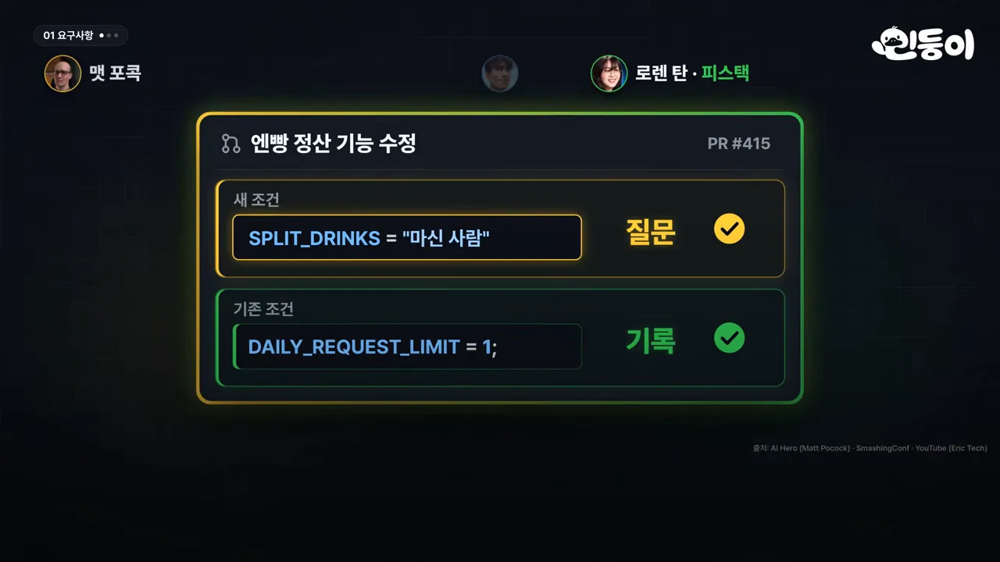
코드를 만들고 고칠 때
구현 단계에서도 셋 다 코드 품질을 다뤄요. 차이는 그 품질을 무엇으로 관리하느냐예요. 맷 포콕은 구조, 애디 오스마니는 순서, 피스택은 비교예요.
맷 포콕 — 정리할 후보와 이유를 보여 줘요
맷 포콕은 필요한 도구를 골라 쓰는 방식이에요. 기능 하나를 바꿀 때마다 상관없는 곳까지 함께 고쳐야 한다면 improve-codebase-architecture를 꺼내요. 이 스킬은 코드베이스를 훑고 HTML(HyperText Markup Language) 보고서로 '깊게 다듬을 후보'를 보여 줘요. 화면에는 후보 1~3이 나란히 있고, 후보마다 묶을 파일(split.ts, rules.ts, total.ts처럼)과 문제가 적혀 있어요.
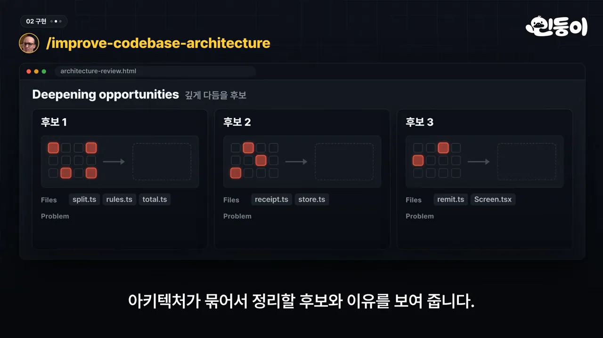
사람이 후보 하나를 고르면 질문을 주고받으며 방향을 정해요. SKILL.md에는 얕은 모듈을 깊은 모듈로 바꾸는 리팩터링을 제안한다고 적혀 있어요. 영상이 노란 자막으로 짚은 목표는 '테스트 용이성과 AI 탐색 용이성'이에요. 테스트하기 쉽고, AI가 코드 속에서 길을 잃지 않는 구조를 노리는 거예요.
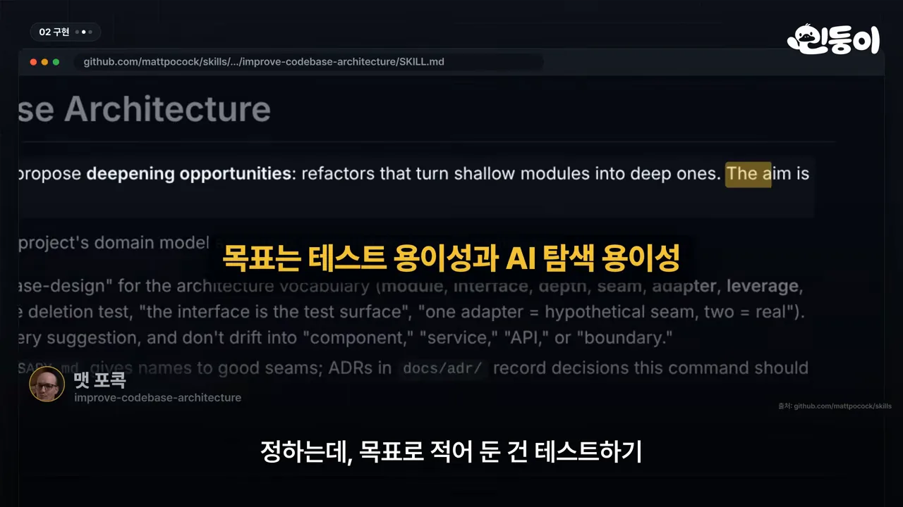
애디 오스마니 — 작업을 나누고 순서까지 정해요
애디는 작업을 나누고 진행하는 순서까지 정해 뒀어요. /build 아래로 정산 앱 작업이 네 조각으로 갈라져요. 조각 1 영수증 한 장 계산, 조각 2 술값 따로 나누기, 조각 3 송금 요청 보내기, 조각 4 정산 완료 알림이에요. 위에서 1, 2, 3번이 차례로 켜지고 4번은 아직 회색이에요.
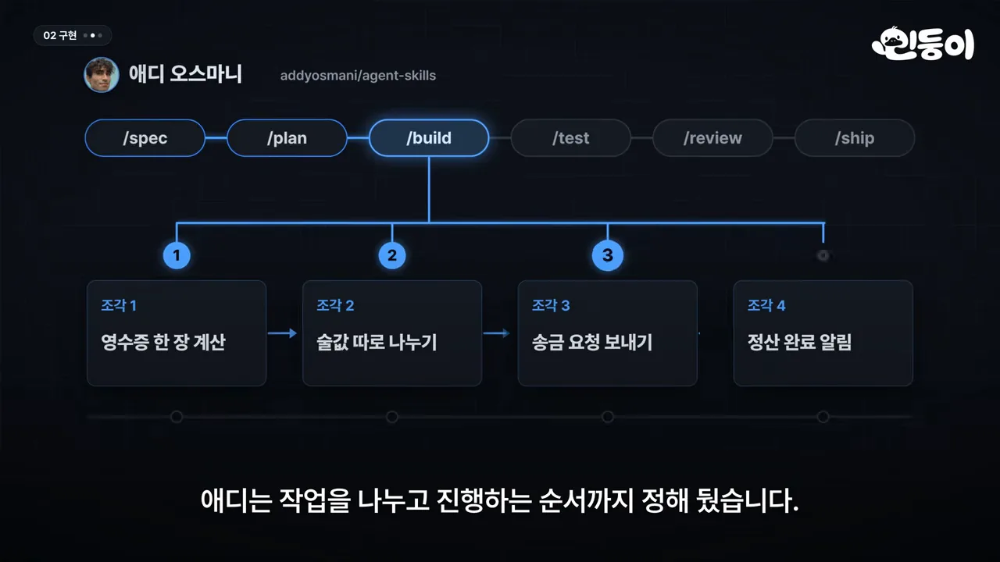
나누는 방식도 정해져 있어요. 왼쪽 '가로 쌓기'는 화면, 계산, 저장 층을 따로 다 만든 뒤 연결하는 방식이에요. 빨간 X와 '아직 동작 안 함'이 붙어 있어요. 오른쪽 '세로 조각'은 영수증 하나를 넣으면 사람별 금액이 나오는 데까지, 화면부터 저장까지 한 줄을 먼저 끝까지 만들어요. 가운데 휴대폰 화면이 그 결과예요.
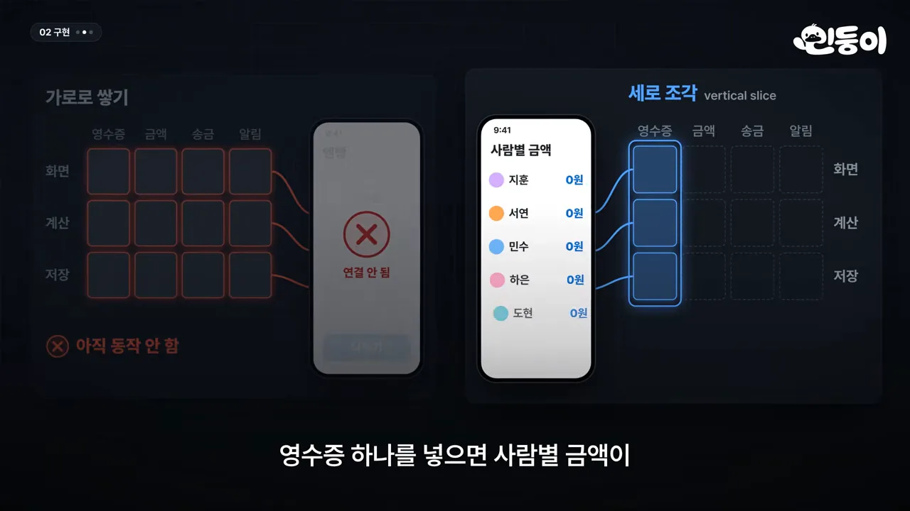
incremental-implementation 스킬은 조각마다 같은 순서를 돌게 해요. 왼쪽 원문 목록은 가장 작은 완성 단위 구현, 테스트, 확인, 커밋, 다음 조각으로 이동이에요. 오른쪽 원이 이 반복을 구현 → 테스트 → 커밋 → 다음으로 줄여 보여 줘요. 아래에는 나누는 방법으로 Vertical Slices(Preferred)가 적혀 있어요.
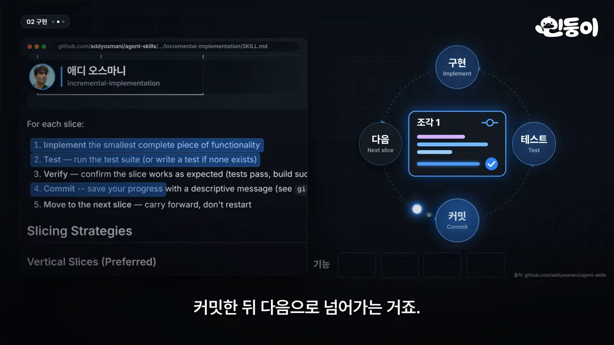
애디의 스킬에는 AI가 단계를 건너뛸 때 댈 법한 핑계와 그 반박도 들어 있어요. 아래는 test-driven-development 스킬의 'Common Rationalizations' 표예요. 왼쪽 빨간 열이 핑계, 오른쪽 파란 열이 반박이에요.
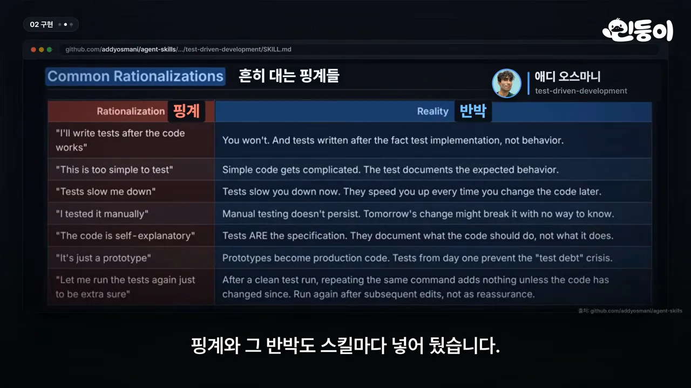
화면의 영어 표에서 영상이 직접 언급한 두 줄을 포함해 몇 줄을 옮기면 이래요.
| 핑계 | 반박 |
|---|---|
| 너무 간단해서 테스트할 필요가 없다 | 간단한 코드도 복잡해져요. 테스트는 기대 동작을 기록해 둬요. |
| 직접 확인해 봤다 | 손으로 한 확인은 남지 않아요. 내일 바꾼 코드가 깨뜨려도 알 길이 없어요. |
| 코드가 돌아가면 그때 테스트를 쓰겠다 | 안 쓰게 돼요. 나중에 쓴 테스트는 동작이 아니라 구현을 검사해요. |
| 그냥 프로토타입이다 | 프로토타입은 결국 실제 코드가 돼요. |
피스택 — 여러 설계안을 겨루게 해요
피스택은 큰 변경에서 여러 설계안을 겨루게 해요. /arena는 같은 과제를 여러 에이전트가 동시에 풀게 해요. 화면 왼쪽 '과제'에서 안 A, B, C로 갈라지고, 오른쪽에서 가운데 안 B가 바탕으로 뽑혀요. 위 문구 'pick a base, graft the strongest parts of the losers into it'는 바탕 하나를 고르고 진 안의 강점을 옮겨 붙인다는 뜻이에요. 안 A와 C에서 초록색 칸 하나씩이 B로 옮겨 가요.
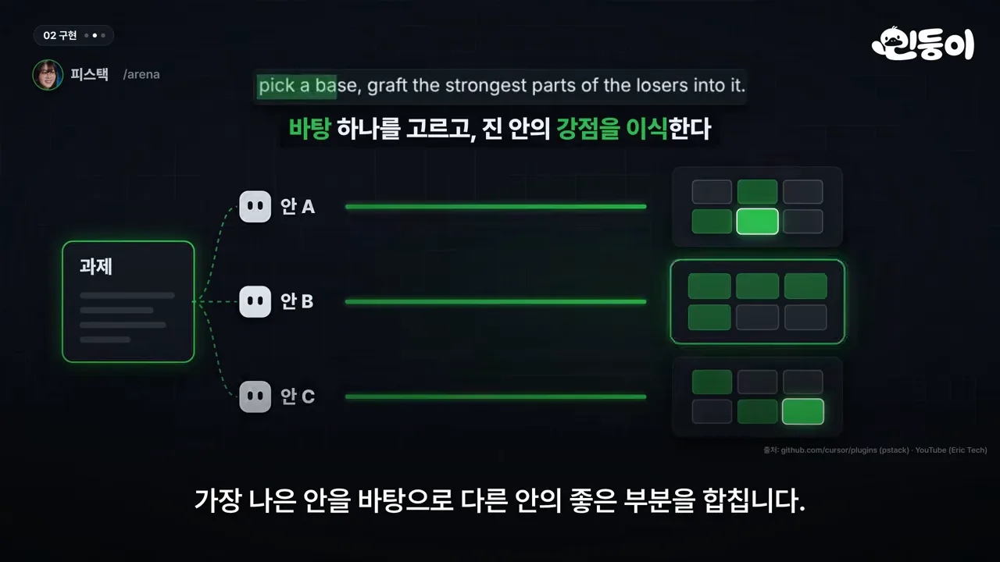
구현 줄을 정리한 화면이에요. 노란 '구조' 카드에 improve-codebase-architecture, 파란 '순서' 카드에 incremental-implementation, 초록 '비교' 카드에 /arena가 붙어 있어요. 지금 구조의 문제를 짚고 싶은지, 개발 순서를 잡고 싶은지, 여러 설계안을 비교하고 싶은지에 따라 꺼낼 도구가 달라져요.
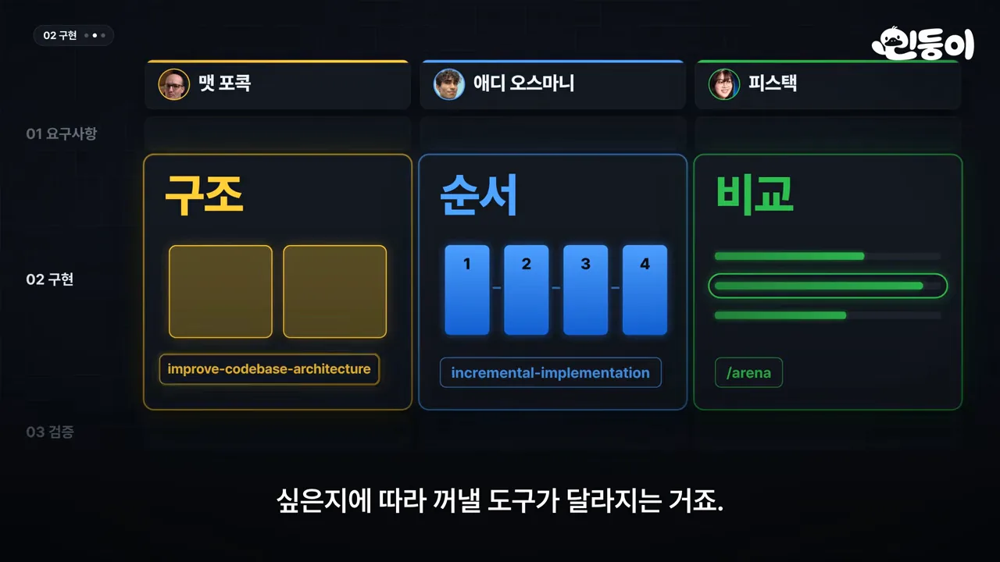
결과를 확인할 때
검증은 셋 모두 중요하게 다뤄요. 그래서 '테스트가 있다'는 것만으로는 고르는 기준이 안 돼요. 아래 화면처럼 세 칸 모두 맨 위에 '테스트'가 적혀 있어요. 갈리는 건 그 아래 두 줄, 무엇을 확인하는지(원하는 동작 / 작업마다 / 코드와 판단)와 어떻게 확인하는지(FAIL / /test)예요.
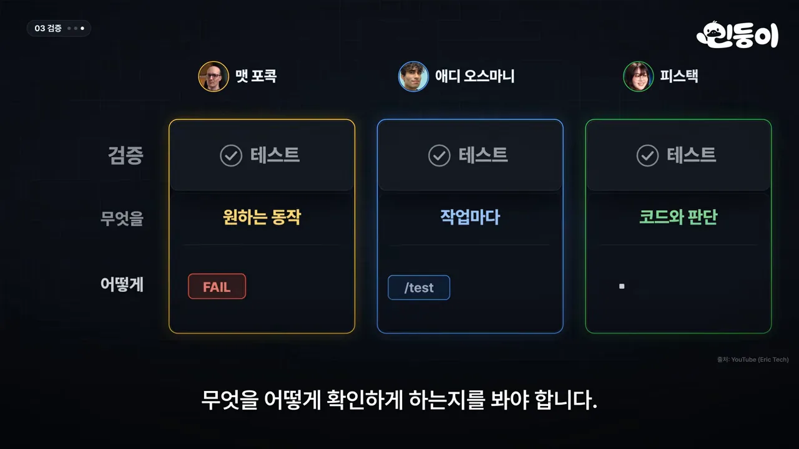
맷 포콕의 tdd — 먼저 실패하는지부터 봐요
맷 포콕의 tdd는 이름 그대로 TDD(Test-Driven Development)를 따르는 스킬이에요. 원하는 동작을 검사하는 테스트를 먼저 쓰고, 구현 전에 그 테스트가 실패하는지 확인해요. 화면의 테스트 이름은 '술값은 마신 사람끼리만 나눈다'예요. 128,000원 영수증을 다섯 명이 나누고 지민은 술을 안 마셨으니, 지민 몫 기대값은 9,600원이에요. 구현 전 1차 실행은 FAIL이고 받은 값은 25,600원이에요. 128,000원을 다섯 명이 똑같이 나눈 값이죠.
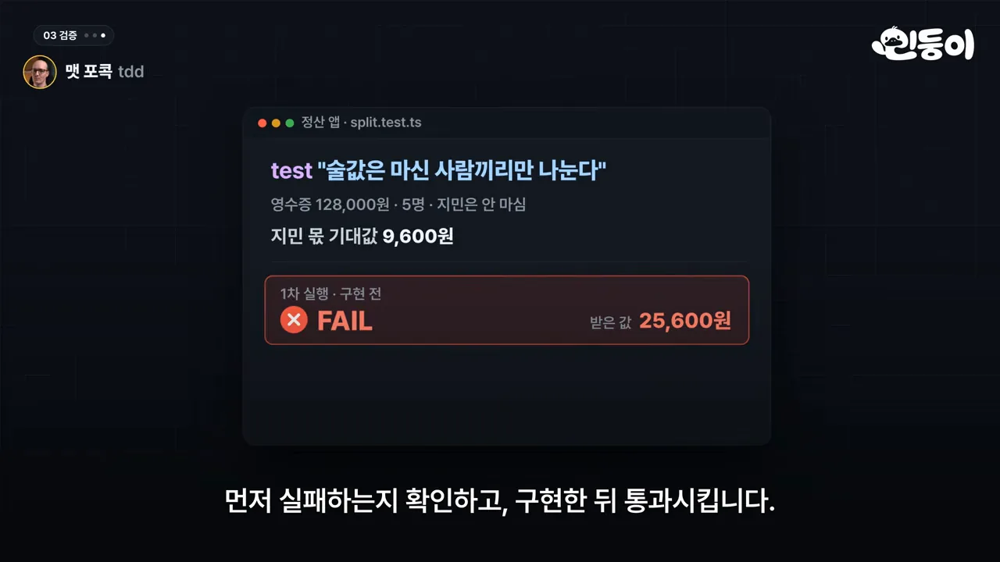
애디 오스마니 — 작업마다 절차로, 중요한 판단은 새 맥락에서
애디는 이런 확인을 작업마다 절차로 넣었어요. 화면에서 작업 1~4 카드마다 '구현, 테스트, 커밋' 칸이 있고, 작업 1과 2는 테스트·커밋까지 파랗게 채워졌어요. 여기에 별도의 검증 단계(/test)와 리뷰 단계(/review)가 따로 있어요.
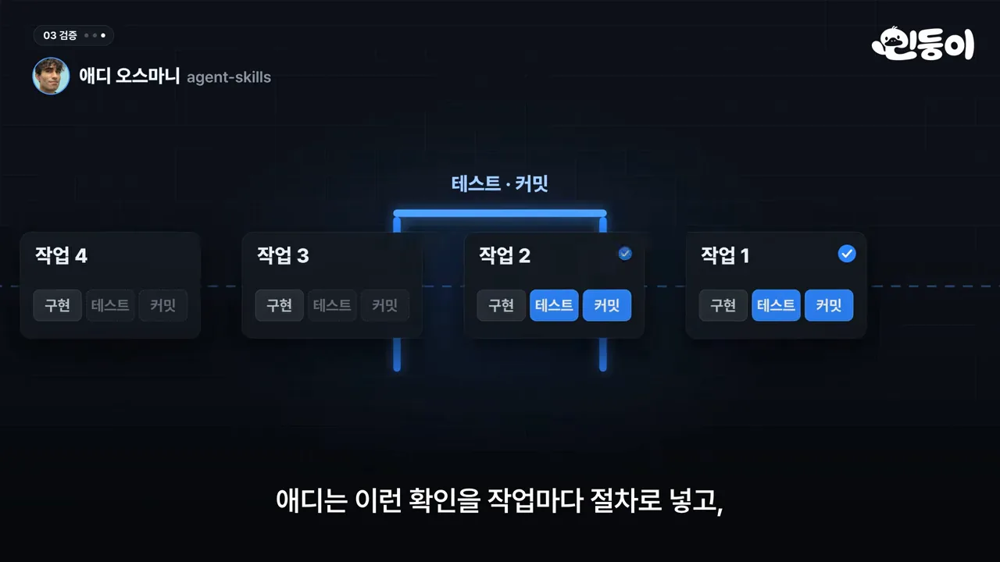
중요한 판단은 새 맥락의 검토자가 다시 의심해 보게 해요. doubt-driven-development 스킬의 원문 'fresh-context adversarial review'를 영상은 '새 맥락에서 하는 반박 검토'로 옮겼어요. 오른쪽 카드에서 빈 맥락의 새 검토자가 '술값은 똑같이 나눈다'는 판단을 받아 들고, 승인과 반박 중 하나를 골라요.
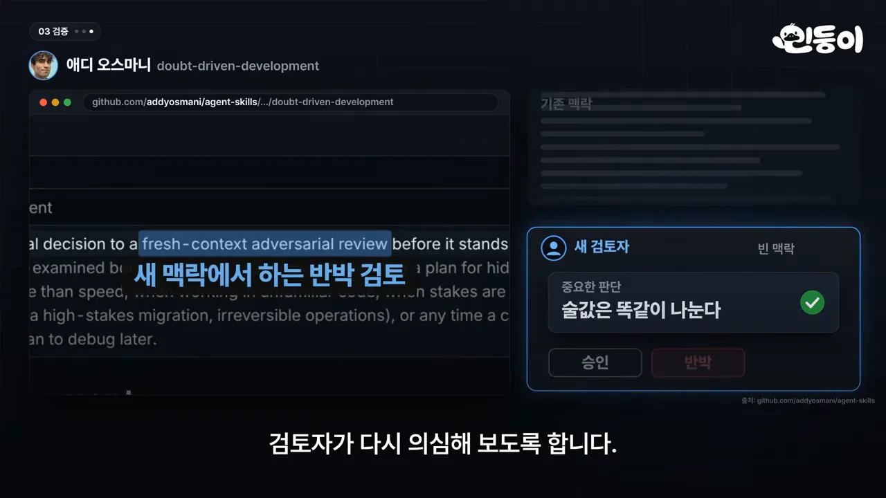
피스택의 /interrogate — 다른 모델에게 검토를 맡겨요
피스택의 /interrogate는 다른 계열의 모델들에게 코드와 판단을 따로 검토하게 해요. 화면 왼쪽은 split.ts 변경분이고, 오른쪽에 모델 A, B, C의 지적이 하나씩 붙어 있어요. 모델 A는 16번 줄에서 마신 사람이 0명이면 0으로 나누게 된다고, 모델 B는 같은 줄에서 1원 단위 나머지가 사라진다고 짚어요. 모델 C는 코드가 아니라 판단을 건드려요. 12번 줄에 대해 '술값만 따로 나누는 게 맞나?'라고 물어요.
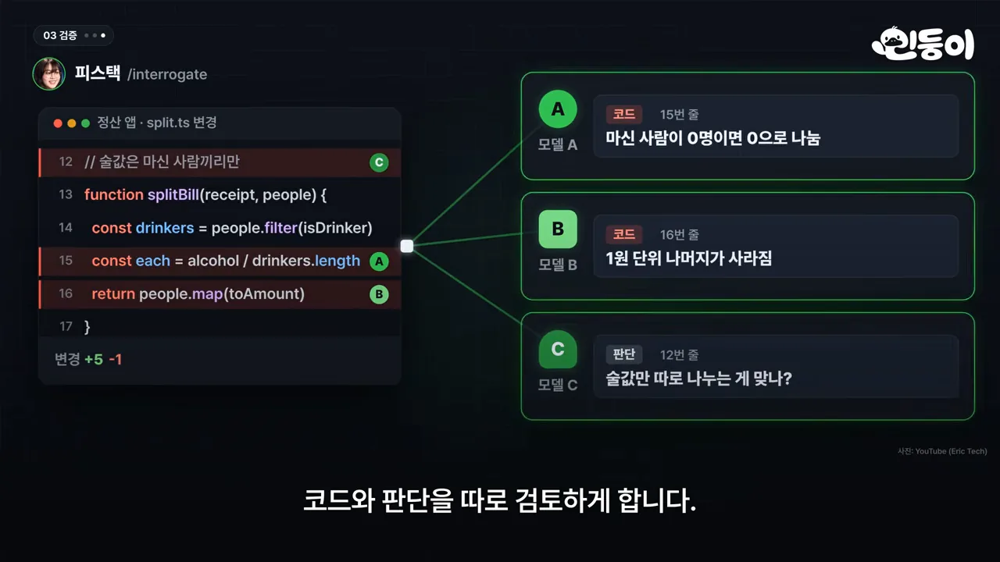
애디와 피스택 모두 작업하던 AI의 판단을 다시 살펴요. 차이는 다른 관점을 어디서 얻느냐예요. 아래 화면 왼쪽 애디는 '새 맥락', 오른쪽 피스택은 '다른 모델'이에요. 피스택 쪽 원문 'model diversity, not assigned personas'는 역할을 나눠 준 같은 모델이 아니라 아예 다른 모델을 쓴다는 뜻이에요.
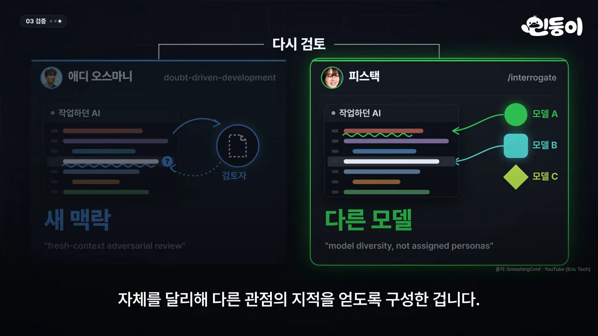
실제 실행 결과로 확인해요
피스택은 실제 실행 결과로도 확인해요. 정산 앱 화면에 '정산 완료'가 떠도 송금 요청 알림은 가지 않았을 수 있어요. 아래 화면 왼쪽은 compile, typecheck, bundle이 모두 통과한 '빌드 성공'이에요. 그런데 오른쪽 '알림 도착'은 0/4이고, 휴대폰 네 대 모두 빨간 X예요.
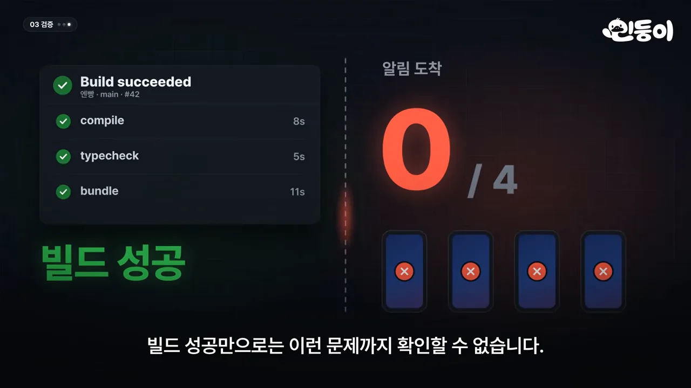
/poteto-mode에 할 일과 완료를 확인할 방법을 주면, 작업에 맞는 절차(플레이북)를 골라 진행해요. 버그 수정이라면 네 단계예요. ① 재현에서 npm test notify가 FAIL, 알림 0/4로 문제를 직접 다시 일으켜요. ② 로그에서 '오늘 이미 요청함' 줄을 원인으로 짚어요. 앞 절의 하루 한 번 제한이 여기서 다시 나와요. ③ notify.ts에서 if (sent) return을 if (sent[m]) continue로 바꿔요. ④ 같은 조건에서 다시 돌리니 PASS, 4/4예요. 실패하던 결과와 통과한 결과를 그대로 붙여서 보여 줘요.
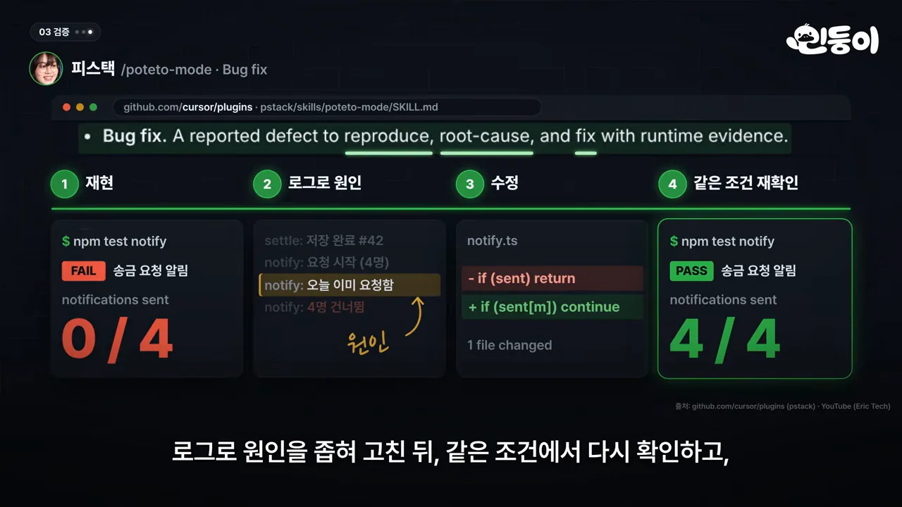
영상이 이 절에서 가져가라고 하는 건 하나예요. 완료를 어떤 결과로 확인할지 처음부터 함께 정하는 거예요. 화면에서 할 일 '송금 요청 알림 버그 수정' 바로 아래에 완료 기준 '친구 4명에게 알림 도착 4/4'가 붙어 있고, 옆에 '나'와 'AI'가 함께 연결돼 있어요.
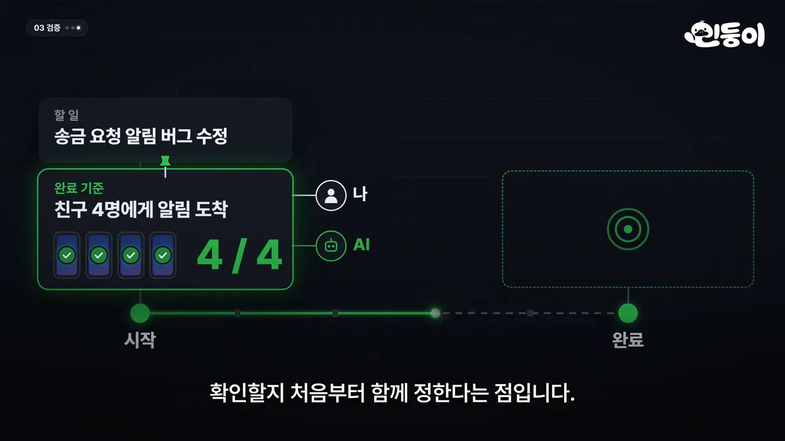
내 작업에 맞게 고르기
세 가지는 개발 단계를 하나씩 나눠 맡는 도구가 아니에요. 겹치는 기능이 많고, 작업을 묶는 방식과 강조점이 달라요. 마지막 정리 화면이 이걸 한눈에 보여 줘요. 줄은 요구사항, 구현, 검증이고 열은 세 스킬 묶음이에요. 맨 아래 손글씨가 각 묶음의 성격이에요. 맷 포콕의 노란 카드는 삐뚤삐뚤 따로 놓여 '골라 쓰는 도구'이고, 애디의 파란 카드는 세로로 이어져 '하나의 절차'예요. 피스택의 초록 카드에는 '조사·경쟁·검토'가 붙어 있어요.
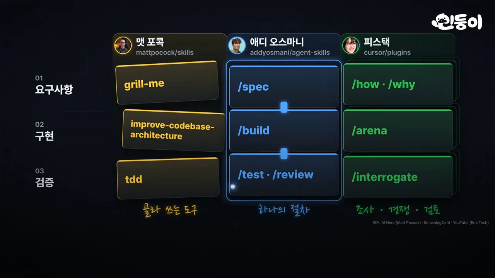
영상의 결론을 표로 옮기면 이래요.
| 맷 포콕 | 애디 오스마니 | 피스택 | |
|---|---|---|---|
| 요구사항 | grill-me, grill-with-docs | /spec | /how, /why |
| 구현 | improve-codebase-architecture | /build (incremental-implementation) | /arena |
| 검증 | tdd | /test, /review, doubt-driven-development | /interrogate, /poteto-mode |
| 이럴 때 골라요 | 지금 작업 방식에 질문, 테스트, 구조 개선 같은 도구를 필요한 만큼 더하고 싶을 때 | 요구사항부터 배포까지 이어지는 절차와 확인 기준을 갖추고 싶을 때 | 기존 코드를 깊이 조사하고, 여러 설계안과 다른 모델의 검토, 실제 실행 확인까지 쓰고 싶을 때 |
세 저장소 주소는 마지막 화면에 모여 있어요. github.com/mattpocock/skills, github.com/addyosmani/agent-skills, github.com/cursor/plugins의 pstack이에요. 영상은 자기 작업 방식에 맞는 묶음부터 직접 써 보라고 권하며 끝나요.
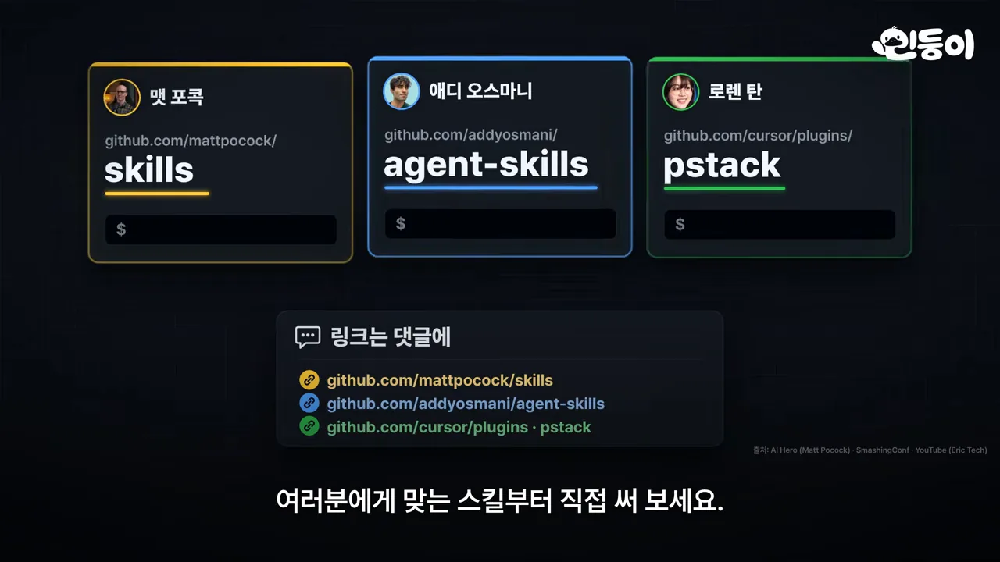